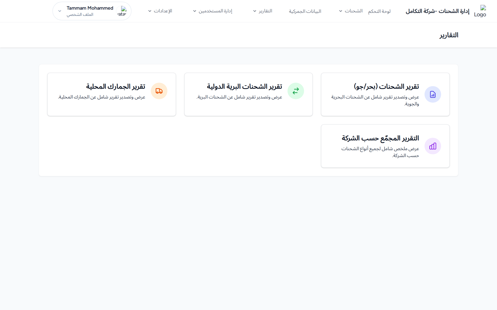
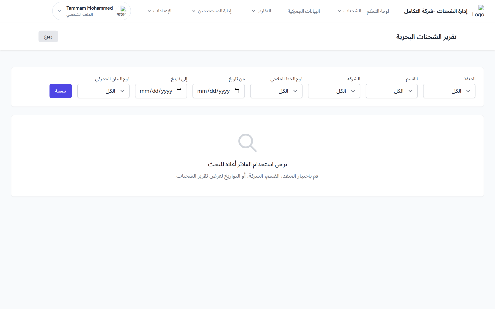

أنواع التقارير
- تقرير الشحنات (بحر/جو)
- تقرير الشحنات البرية الدولية
- تقرير الشحنات المحلية
- التقرير المجمّع (ملخّص حسب الشركة)
- التقرير النهائي للشحنات (حسب الشركة والقسم معاً)

صفحة التقارير: بطاقات أنواع التقارير المختلفة.
في معظم التقارير لا تظهر نتائج حتى تطبّق فلتراً واحداً على الأقل وتضغط تصفية. ويظهر زر تصدير PDF فقط عند وجود نتائج، وزر مسح التصفية عند تفعيل فلاتر.
كيفية إنشاء تقرير وتصديره
- افتح نوع التقرير المطلوب من قائمة «التقارير».
- حدّد الفلاتر (المنفذ، القسم، الشركة، نوع الخط الملاحي، من/إلى تاريخ، نوع البيان، البحث… حسب التقرير).
- اضغط تصفية لعرض النتائج.
- اضغط تصدير PDF لتنزيل التقرير منسّقاً.

تقرير الشحنات (بحر/جو): شريط الفلاتر، زرّا «تصفية» و«تصدير PDF»، وجدول النتائج.
المخرجات المتوقعة: يظهر جدول بالنتائج، وعند التصدير يُنزَّل ملف PDF منسّق (عربي). التقارير تتبع السنة المالية المحددة.